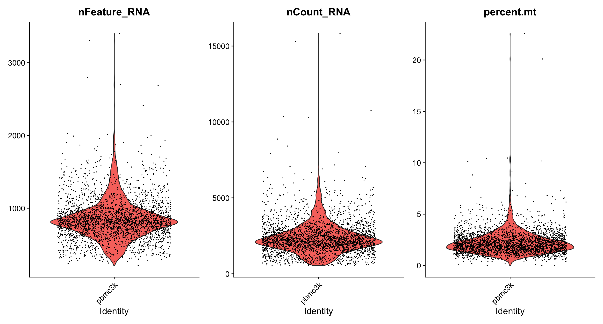
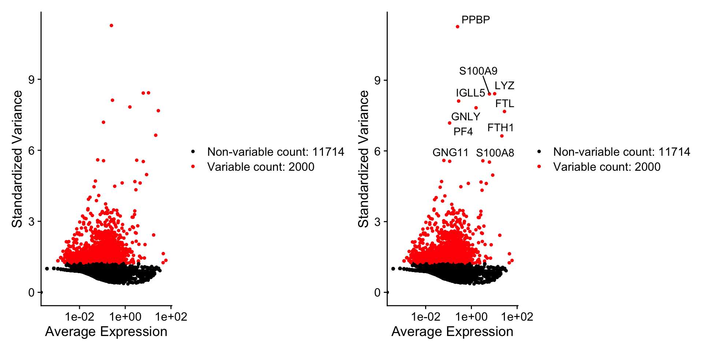
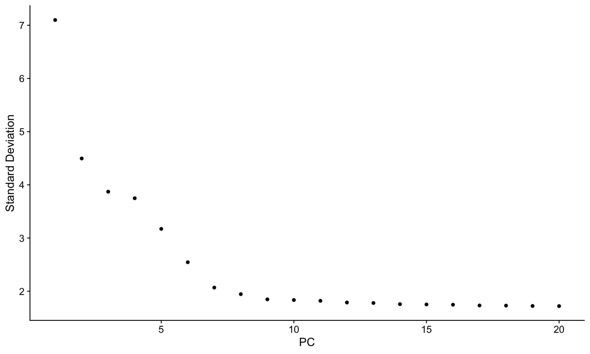
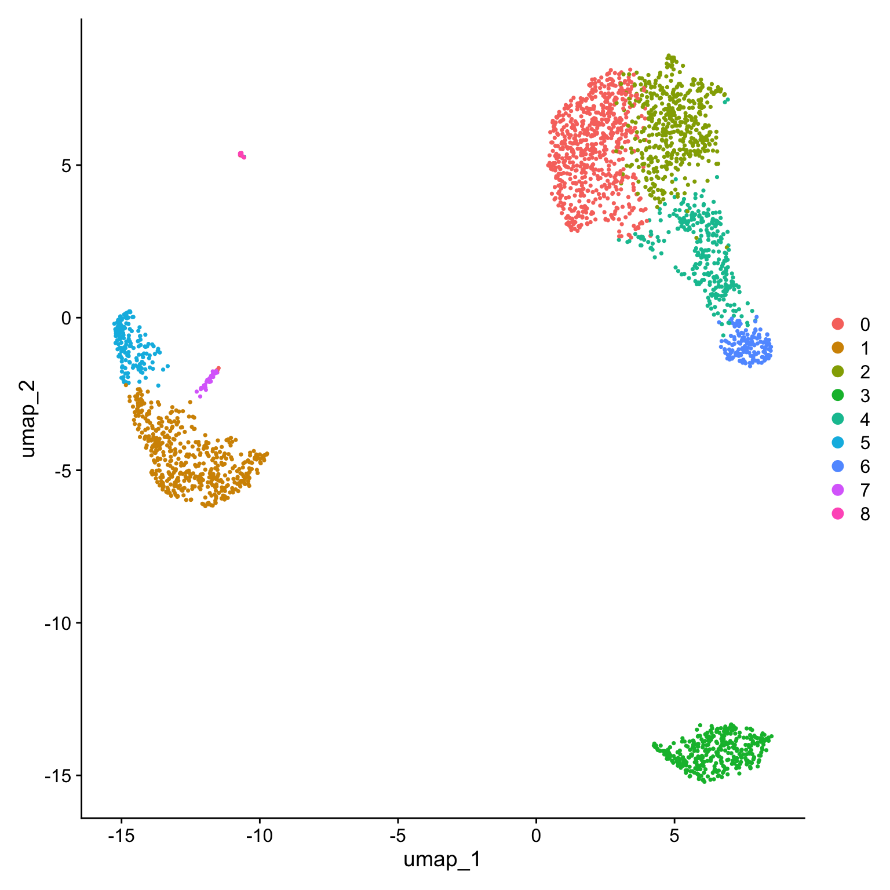
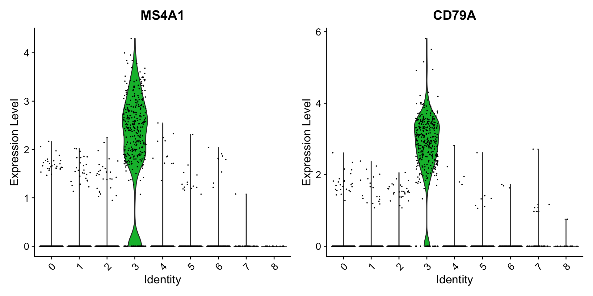
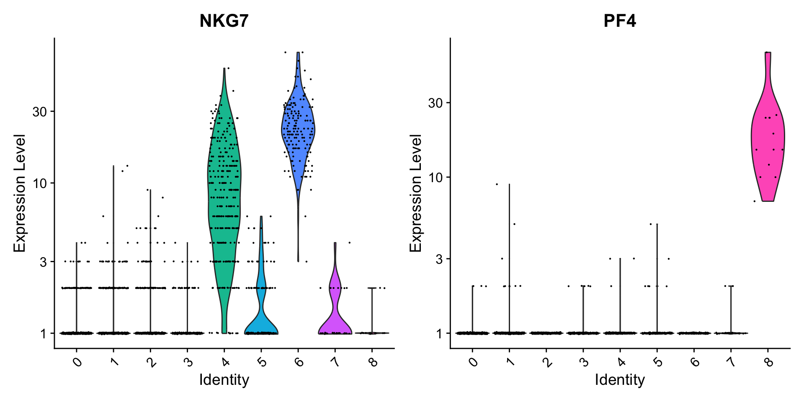
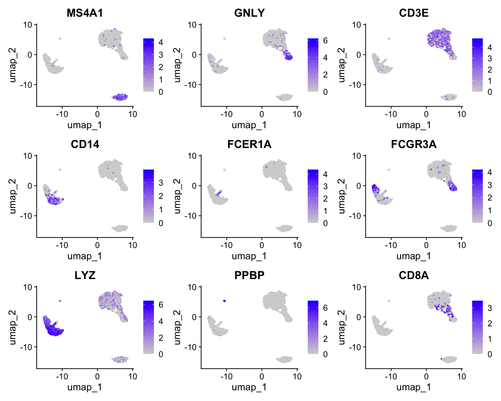

For this tutorial, we will be analyzing the a dataset of Peripheral Blood Mononuclear Cells (PBMC) freely available from 10X Genomics. There are 2,700 single cells that were sequenced on the Illumina NextSeq 500. The raw data can be found here.
We start by reading in the data. The Read10X() function reads in the output of the cellranger pipeline from 10X, returning a unique molecular identified (UMI) count matrix. The values in this matrix represent the number of molecules for each feature (i.e. gene; row) that are detected in each cell (column). Note that more recent versions of cellranger now also output using the h5 file format, which can be read in using the Read10X_h5() function in Seurat.
We next use the count matrix to create a Seurat object. The object serves as a container that contains both data (like the count matrix) and analysis (like PCA, or clustering results) for a single-cell dataset. For more information, check out our [Seurat object interaction vignette], or our GitHub Wiki. For example, in Seurat v5, the count matrix is stored in pbmc[["RNA"]]$counts.
library(dplyr)library(Seurat)library(patchwork)# Load the PBMC datasetpbmc.data <-Read10X(data.dir ="../seurat_pbmc_data/filtered_gene_bc_matrices/hg19/")# Initialize the Seurat object with the raw (non-normalized data).pbmc <-CreateSeuratObject(counts = pbmc.data, project ="pbmc3k", min.cells =3, min.features =200)pbmc
An object of class Seurat
13714 features across 2700 samples within 1 assay
Active assay: RNA (13714 features, 0 variable features)
1 layer present: counts
What does data in a count matrix look like?
# Lets examine a few genes in the first thirty cellspbmc.data[c("CD3D", "TCL1A", "MS4A1"), 1:30]
The . values in the matrix represent 0s (no molecules detected). Since most values in an scRNA-seq matrix are 0, Seurat uses a sparse-matrix representation whenever possible. This results in significant memory and speed savings for Drop-seq/inDrop/10x data.
The steps below encompass the standard pre-processing workflow for scRNA-seq data in Seurat. These represent the selection and filtration of cells based on QC metrics, data normalization and scaling, and the detection of highly variable features.
QC and selecting cells for further analysis
Seurat allows you to easily explore QC metrics and filter cells based on any user-defined criteria. A few QC metrics commonly used by the community include
The number of unique genes detected in each cell.
Low-quality cells or empty droplets will often have very few genes
Cell doublets or multiplets may exhibit an aberrantly high gene count
Similarly, the total number of molecules detected within a cell (correlates strongly with unique genes)
The percentage of reads that map to the mitochondrial genome
Low-quality / dying cells often exhibit extensive mitochondrial contamination
We calculate mitochondrial QC metrics with the PercentageFeatureSet() function, which calculates the percentage of counts originating from a set of features
We use the set of all genes starting with MT- as a set of mitochondrial genes
# The [[ operator can add columns to object metadata. This is a great place to stash QC statspbmc[["percent.mt"]] <-PercentageFeatureSet(pbmc, pattern ="^MT-")
Where are QC metrics stored in Seurat?
The number of unique genes and total molecules are automatically calculated during CreateSeuratObject()
You can find them stored in the object meta data
# Show QC metrics for the first 5 cellshead(pbmc@meta.data, 5)
In the example below, we visualize QC metrics, and use these to filter cells.
We filter cells that have unique feature counts over 2,500 or less than 200
We filter cells that have >5% mitochondrial counts
# Visualize QC metrics as a violin plotVlnPlot(pbmc, features =c("nFeature_RNA", "nCount_RNA", "percent.mt"), ncol =3)

# FeatureScatter is typically used to visualize feature-feature relationships, but can be used# for anything calculated by the object, i.e. columns in object metadata, PC scores etc.plot1 <-FeatureScatter(pbmc, feature1 ="nCount_RNA", feature2 ="percent.mt")plot2 <-FeatureScatter(pbmc, feature1 ="nCount_RNA", feature2 ="nFeature_RNA")plot1 + plot2
After removing unwanted cells from the dataset, the next step is to normalize the data. By default, we employ a global-scaling normalization method “LogNormalize” that normalizes the feature expression measurements for each cell by the total expression, multiplies this by a scale factor (10,000 by default), and log-transforms the result. In Seurat v5, Normalized values are stored in pbmc[["RNA"]]$data.
For clarity, in this previous line of code (and in future commands), we provide the default values for certain parameters in the function call. However, this isn’t required and the same behavior can be achieved with:
pbmc <-NormalizeData(pbmc)
While this method of normalization is standard and widely used in scRNA-seq analysis, global-scaling relies on an assumption that each cell originally contains the same number of RNA molecules. We and others have developed alternative workflows for the single cell preprocessing that do not make these assumptions. For users who are interested, please check out our SCTransform() normalization workflow. The method is described in ourpaper, with a separate vignette using Seurat here. The use of SCTransform replaces the need to run NormalizeData, FindVariableFeatures, or ScaleData (described below.)
Identification of highly variable features (feature selection)
We next calculate a subset of features that exhibit high cell-to-cell variation in the dataset (i.e, they are highly expressed in some cells, and lowly expressed in others). We and others have found that focusing on these genes in downstream analysis helps to highlight biological signal in single-cell datasets.
Our procedure in Seurat is described in detail here, and improves on previous versions by directly modeling the mean-variance relationship inherent in single-cell data, and is implemented in the FindVariableFeatures() function. By default, we return 2,000 features per dataset. These will be used in downstream analysis, like PCA.
pbmc <-FindVariableFeatures(pbmc, selection.method ="vst", nfeatures =2000)# Identify the 10 most highly variable genestop10 <-head(VariableFeatures(pbmc), 10)# plot variable features with and without labelsplot1 <-VariableFeaturePlot(pbmc)plot2 <-LabelPoints(plot = plot1, points = top10, repel =TRUE)plot1 + plot2

Scaling the data
Next, we apply a linear transformation (‘scaling’) that is a standard pre-processing step prior to dimensional reduction techniques like PCA. The ScaleData() function:
Shifts the expression of each gene, so that the mean expression across cells is 0
Scales the expression of each gene, so that the variance across cells is 1
This step gives equal weight in downstream analyses, so that highly-expressed genes do not dominate
The results of this are stored in pbmc[["RNA"]]$scale.data
By default, only variable features are scaled.
You can specify the features argument to scale additional features
all.genes <-rownames(pbmc)pbmc <-ScaleData(pbmc, features = all.genes)
How can I remove unwanted sources of variation
In Seurat, we also use the ScaleData() function to remove unwanted sources of variation from a single-cell dataset. For example, we could ‘regress out’ heterogeneity associated with (for example) cell cycle stage, or mitochondrial contamination i.e.:
However, particularly for advanced users who would like to use this functionality, we strongly recommend the use of our new normalization workflow, SCTransform(). The method is described in our paper, with a separate vignette using Seurat here. As with ScaleData(), the function SCTransform() also includes a vars.to.regress parameter.
Perform linear dimensional reduction
Next we perform PCA on the scaled data. By default, only the previously determined variable features are used as input, but can be defined using features argument if you wish to choose a different subset (if you do want to use a custom subset of features, make sure you pass these to ScaleData first).
For the first principal components, Seurat outputs a list of genes with the most positive and negative loadings, representing modules of genes that exhibit either correlation (or anti-correlation) across single-cells in the dataset.
pbmc <-RunPCA(pbmc, features =VariableFeatures(object = pbmc))
Seurat provides several useful ways of visualizing both cells and features that define the PCA, including VizDimReduction(), DimPlot(), and DimHeatmap()
# Examine and visualize PCA results a few different waysprint(pbmc[["pca"]], dims =1:5, nfeatures =5)
In particular DimHeatmap() allows for easy exploration of the primary sources of heterogeneity in a dataset, and can be useful when trying to decide which PCs to include for further downstream analyses. Both cells and features are ordered according to their PCA scores. Setting cells to a number plots the ‘extreme’ cells on both ends of the spectrum, which dramatically speeds plotting for large datasets. Though clearly a supervised analysis, we find this to be a valuable tool for exploring correlated feature sets.
To overcome the extensive technical noise in any single feature for scRNA-seq data, Seurat clusters cells based on their PCA scores, with each PC essentially representing a ‘metafeature’ that combines information across a correlated feature set. The top principal components therefore represent a robust compression of the dataset. However, how many components should we choose to include? 10? 20? 100?
In Macosko et al, we implemented a resampling test inspired by the JackStraw procedure. While still available in Seurat (see previous vignette), this is a slow and computationally expensive procedure, and we is no longer routinely used in single cell analysis.
An alternative heuristic method generates an ‘Elbow plot’: a ranking of principle components based on the percentage of variance explained by each one (ElbowPlot() function). In this example, we can observe an ‘elbow’ around PC9-10, suggesting that the majority of true signal is captured in the first 10 PCs.
ElbowPlot(pbmc)

Identifying the true dimensionality of a dataset – can be challenging/uncertain for the user. We therefore suggest these multiple approaches for users. The first is more supervised, exploring PCs to determine relevant sources of heterogeneity, and could be used in conjunction with GSEA for example. The second (ElbowPlot) The third is a heuristic that is commonly used, and can be calculated instantly. In this example, we might have been justified in choosing anything between PC 7-12 as a cutoff.
We chose 10 here, but encourage users to consider the following:
Dendritic cell and NK aficionados may recognize that genes strongly associated with PCs 12 and 13 define rare immune subsets (i.e. MZB1 is a marker for plasmacytoid DCs). However, these groups are so rare, they are difficult to distinguish from background noise for a dataset of this size without prior knowledge.
We encourage users to repeat downstream analyses with a different number of PCs (10, 15, or even 50!). As you will observe, the results often do not differ dramatically.
We advise users to err on the higher side when choosing this parameter. For example, performing downstream analyses with only 5 PCs does significantly and adversely affect results.
Cluster the cells
Seurat applies a graph-based clustering approach, building upon initial strategies in (Macosko et al). Importantly, the distance metric which drives the clustering analysis (based on previously identified PCs) remains the same. However, our approach to partitioning the cellular distance matrix into clusters has dramatically improved. Our approach was heavily inspired by recent manuscripts which applied graph-based clustering approaches to scRNA-seq data [SNN-Cliq, Xu and Su, Bioinformatics, 2015] and CyTOF data [PhenoGraph, Levine et al., Cell, 2015]. Briefly, these methods embed cells in a graph structure - for example a K-nearest neighbor (KNN) graph, with edges drawn between cells with similar feature expression patterns, and then attempt to partition this graph into highly interconnected ‘quasi-cliques’ or ‘communities’.
As in PhenoGraph, we first construct a KNN graph based on the euclidean distance in PCA space, and refine the edge weights between any two cells based on the shared overlap in their local neighborhoods (Jaccard similarity). This step is performed using the FindNeighbors() function, and takes as input the previously defined dimensionality of the dataset (first 10 PCs).
To cluster the cells, we next apply modularity optimization techniques such as the Louvain algorithm (default) or SLM [SLM, Blondel et al., Journal of Statistical Mechanics], to iteratively group cells together, with the goal of optimizing the standard modularity function. The FindClusters() function implements this procedure, and contains a resolution parameter that sets the ‘granularity’ of the downstream clustering, with increased values leading to a greater number of clusters. We find that setting this parameter between 0.4-1.2 typically returns good results for single-cell datasets of around 3K cells. Optimal resolution often increases for larger datasets. The clusters can be found using the Idents() function.
Modularity Optimizer version 1.3.0 by Ludo Waltman and Nees Jan van Eck
Number of nodes: 2638
Number of edges: 95927
Running Louvain algorithm...
Maximum modularity in 10 random starts: 0.8728
Number of communities: 9
Elapsed time: 0 seconds
# Look at cluster IDs of the first 5 cellshead(Idents(pbmc), 5)
Seurat offers several non-linear dimensional reduction techniques, such as tSNE and UMAP, to visualize and explore these datasets. The goal of these algorithms is to learn underlying structure in the dataset, in order to place similar cells together in low-dimensional space. Therefore, cells that are grouped together within graph-based clusters determined above should co-localize on these dimension reduction plots.
While we and others have routinely found 2D visualization techniques like tSNE and UMAP to be valuable tools for exploring datasets, all visualization techniques have limitations, and cannot fully represent the complexity of the underlying data. In particular, these methods aim to preserve local distances in the dataset (i.e. ensuring that cells with very similar gene expression profiles co-localize), but often do not preserve more global relationships. We encourage users to leverage techniques like UMAP for visualization, but to avoid drawing biological conclusions solely on the basis of visualization techniques.
pbmc <-RunUMAP(pbmc, dims =1:10)
# note that you can set `label = TRUE` or use the LabelClusters function to help label# individual clustersDimPlot(pbmc, reduction ="umap")

You can save the object at this point so that it can easily be loaded back in without having to rerun the computationally intensive steps performed above, or easily shared with collaborators.
Finding differentially expressed features (cluster biomarkers)
Seurat can help you find markers that define clusters via differential expression (DE). By default, it identifies positive and negative markers of a single cluster (specified in ident.1), compared to all other cells. FindAllMarkers() automates this process for all clusters, but you can also test groups of clusters vs. each other, or against all cells.
In Seurat v5, we use the presto package (as described here and available for installation here), to dramatically improve the speed of DE analysis, particularly for large datasets. For users who are not using presto, you can examine the documentation for this function (?FindMarkers) to explore the min.pct and logfc.threshold parameters, which can be increased in order to increase the speed of DE testing.
# find all markers of cluster 2cluster2.markers <-FindMarkers(pbmc, ident.1 =2)head(cluster2.markers, n =5)
# find all markers distinguishing cluster 5 from clusters 0 and 3cluster5.markers <-FindMarkers(pbmc, ident.1 =5, ident.2 =c(0, 3))head(cluster5.markers, n =5)
# find markers for every cluster compared to all remaining cells, report only the positive# onespbmc.markers <-FindAllMarkers(pbmc, only.pos =TRUE)pbmc.markers %>%group_by(cluster) %>% dplyr::filter(avg_log2FC >1)
Seurat has several tests for differential expression which can be set with the test.use parameter (see our DE vignette for details). For example, the ROC test returns the ‘classification power’ for any individual marker (ranging from 0 - random, to 1 - perfect).
We include several tools for visualizing marker expression. VlnPlot() (shows expression probability distributions across clusters), and FeaturePlot() (visualizes feature expression on a tSNE or PCA plot) are our most commonly used visualizations. We also suggest exploring RidgePlot(), CellScatter(), and DotPlot() as additional methods to view your dataset.
VlnPlot(pbmc, features =c("MS4A1", "CD79A"))

# you can plot raw counts as wellVlnPlot(pbmc, features =c("NKG7", "PF4"), slot ="counts", log =TRUE)

FeaturePlot(pbmc, features =c("MS4A1", "GNLY", "CD3E", "CD14", "FCER1A", "FCGR3A", "LYZ", "PPBP","CD8A"))

DoHeatmap() generates an expression heatmap for given cells and features. In this case, we are plotting the top 20 markers (or all markers if less than 20) for each cluster.